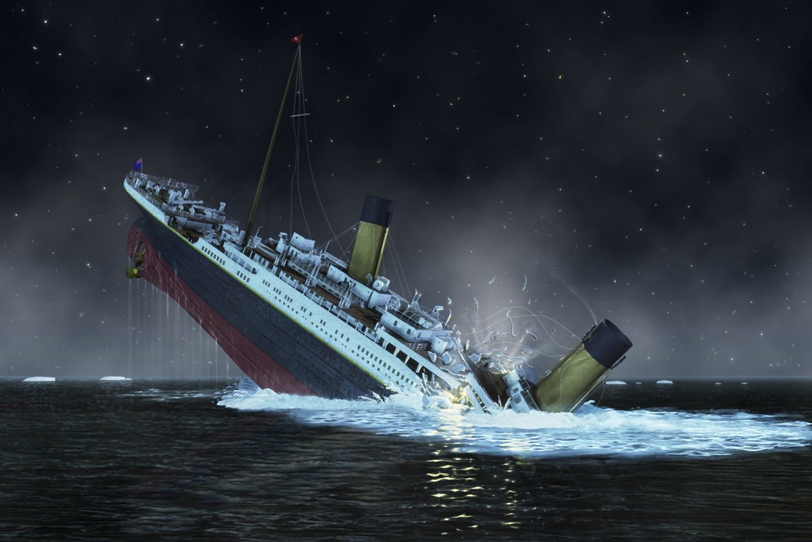

Às 23h40 do dia 14 de abril de 1912, a lateral do navio colidiu com um iceberg, o que provocou danos irreparáveis no casco. O Titanic naufragou às 2h20 da manhã do dia 15 de abril de 1912, causando a morte de 1500 pessoas das mais de 2200 que estavam a bordo. Os destroços do RMS Titanic foram encontrados em 1985.
